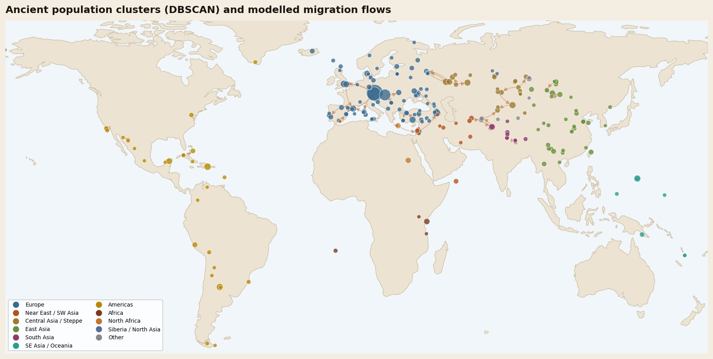

The Yamnaya were mobile herders of the Pontic–Caspian steppe who appeared around 3300 BC and reached from Hungary to Kazakhstan by 3000 BC. Ancient genomes published in 2015 showed that Corded Ware people in Germany drew about 75% of their ancestry from Yamnaya-related people, and that ancestry is found in nearly all Europeans today. Whether the Yamnaya also spread the Indo-European languages is a strong hypothesis, not a settled fact.
One number changed how archaeologists talk about prehistoric Europe: 75%. That is the share of ancestry that Corded Ware people, buried in Germany about 4,500 years ago, traced to the Yamnaya, herders from the steppe far to the east. The figure came from a 2015 Nature paper led by Wolfgang Haak and David Reich, and it described one of the largest population turnovers ever detected in ancient DNA.
The Yamnaya left no writing. They are known from their graves: bodies placed in pits under earth mounds, called kurgans, across the grasslands from the Danube to the Urals. The name itself comes from the Russian word for pit.

Two papers in the same issue
On 11 June 2015, Nature published two studies that reached the same conclusion by different routes.
Haak’s team analysed 69 Europeans who lived between 8,000 and 3,000 years ago. Rather than sequencing whole genomes, they “captured” almost 400,000 known variable positions. That cut the sequencing needed by a median of about 250-fold and allowed them to study far more people than earlier work. Their headline result was the Corded Ware figure: roughly three-quarters Yamnaya-related ancestry, arriving in central Europe about 4,500 years ago.
Morten Allentoft, Eske Willerslev and colleagues sequenced 101 ancient people from across Eurasia, mostly from the Bronze Age (about 3000–1000 BC). They concluded that the period was shaped by “large-scale population migrations and replacements” in both Europe and Asia, not simply by trade and the spread of ideas.
Two independent teams, using different methods, found the same thing. That is why the steppe migration is now treated as established science, even though its meaning is still argued over.
What the Yamnaya genome looks like
The Yamnaya were not a pure “original” population. Haak’s team found they descended from eastern European hunter-gatherers and also from a population with Near Eastern ancestry. A 2016 study by Iosif Lazaridis added a clue: farmers related to those of Neolithic Iran spread northward into the steppe.
In February 2025, Lazaridis and colleagues published ancient DNA from 435 people to trace Yamnaya origins in detail. They describe three genetic clines (gradual mixtures across space). The key source was a population along the Caucasus and lower Volga, which contributed around four-fifths of Yamnaya ancestry. According to that study, the direct ancestors of the Yamnaya formed around 4000 BC among the Serednii Stih groups of the Dnipro and Don rivers and expanded rapidly after about 3750–3350 BC.
Mathieson’s 2015 study added a time series. It sampled people from the Samara region of the Russian steppe spanning 5600 to 300 BC and detected mixture into the steppe from at least two outside sources. The Yamnaya were the product of centuries of mixing, not a single founding group.
One more thread runs through the Yamnaya genome. Hunter-gatherers from Russia show genetic affinity to a 24,000-year-old Siberian child, the Mal’ta boy, the type specimen of a population geneticists call Ancient North Eurasians. Haak’s team suggested these eastern hunter-gatherers were the likely route by which that ancient Siberian ancestry reached Europeans. Interestingly, the Yamnaya share fewer alleles with the Mal’ta boy than earlier eastern hunter-gatherers did, a sign that this Siberian component was diluted on the steppe between 5,000 and 3,000 BC as other ancestry flowed in.
The Yamnaya in our atlas data
Hominin History’s AADR Genome Atlas is built on release v66.p1 of the Allen Ancient DNA Resource. We counted every individual whose population label contains “Yamnaya”. There are 216, from nine modern countries.
| Measure | Value in our AADR subset |
|---|---|
| Individuals | 216 labelled Yamnaya (including a few flagged outliers) |
| By country | Russia 132, Moldova 20, Hungary 14, Kazakhstan 14, Ukraine 12, Romania 11, Bulgaria 8, Slovakia 3, Serbia 2 |
| Dates | Median about 4,840 years before present; 90% fall between about 5,160 and 4,500 |
| Y chromosome | 106 of 143 men with a call (74%) carry haplogroup R1b; 19 carry I2 |
| Largest cluster | 94 people, mainly Samara and Orenburg Yamnaya, dated about 5,165–4,518 years ago |
Two cautions apply. First, these counts reflect where archaeologists have dug and sampled, not how many people lived where. Russia dominates because the Samara and Kalmykia collections have been sampled heavily. Second, a culture label is an archaeological category. A burial classed as Yamnaya is not guaranteed to carry typical Yamnaya ancestry, which is why the dataset marks some individuals as outliers.
The Y-chromosome pattern matches what Haak’s team saw in 2015. Outside Russia, before the Late Neolithic, they found only one R1b man among 70 individuals in the published literature. After the steppe migration, R1a and R1b appeared in 60% of a small sample (10) of Late Neolithic and Bronze Age Europeans. Those lineages are now among the most common in Europe. You can follow the westward movement on the migration map, where it appears as the steppe (Yamnaya) expansion of about 5,000–4,500 years ago.
Did the Yamnaya bring Indo-European languages?
This is the contested part. The Indo-European family includes languages from English and Hindi to Russian and Persian, and for more than a century scholars have argued about where their shared parent language was spoken.
- The steppe hypothesis places early Indo-European speakers among the herders north of the Black and Caspian Seas, with their languages spreading after the invention of wheeled vehicles.
- The Anatolian hypothesis, championed by archaeologist Colin Renfrew, links the languages to the first farmers who spread from Anatolia about 8,500 years ago.
Haak’s team argued that their results made “a compelling case” for the steppe as a source of at least some Indo-European languages in Europe. But they also cautioned that the homeland of Proto-Indo-European, the shared parent of European and Asian branches, could not be determined from their data.
The 2025 study goes further. It proposes that the ancestor of both the Indo-European and the extinct Anatolian languages, such as Hittite, was spoken by Caucasus–lower Volga people between 4400 and 4000 BC. Its evidence is that this population contributed at least a tenth of the ancestry of Bronze Age central Anatolians who spoke Hittite.
Genes, however, do not carry grammar. Linking a genetic signal to a language requires assumptions about who spoke what, and many linguists and archaeologists remain cautious. The fairest summary is that ancient DNA has made the steppe hypothesis the front-runner for Europe, while the deeper homeland remains debated.
What the Yamnaya did not bring
The steppe migration is sometimes told as if it delivered modern Europeans ready-made. The genomes say otherwise. Allentoft’s team found that light skin pigmentation was already common in the Bronze Age, but the ability to digest milk as an adult was not. Selection on lactose tolerance took off later than once thought, despite the herders’ cattle.
And the people already in Europe did not vanish. Steppe ancestry mixed with the descendants of early European farmers and hunter-gatherers. Most Europeans today carry all three strands in different proportions. A useful contrast is Ötzi the Iceman, who died in the Alps about 5,300 years ago, before steppe ancestry reached the region, and carried none of it.
To see where the Yamnaya fit on the much longer human story, open the interactive family tree; to learn how these genomes are read from bone, see how ancient DNA works.
Explore 19,029 dated ancient DNA samples, including the steppe samples discussed here, on the interactive map.
Open the AADR Genome Atlas →Frequently asked questions
Who were the Yamnaya?
The Yamnaya were mobile herders of the Pontic–Caspian steppe, north of the Black and Caspian Seas. They are known from pit graves under earth mounds called kurgans, and they appeared around 3300 BC.
When did the Yamnaya live?
The Yamnaya complex appeared around 3300 BC and by 3000 BC stretched from Hungary to Kazakhstan. In our AADR subset, the median date of Yamnaya-labelled individuals is about 4,840 years ago.
Do Europeans have Yamnaya DNA?
Yes. Steppe ancestry linked to the Yamnaya arrived in central Europe about 4,500 years ago, and a 2015 study found it in all sampled central Europeans after that time and in nearly all Europeans today.
Did the Yamnaya speak Indo-European?
Possibly, but this is debated. Ancient DNA strongly supports a steppe source for at least some Indo-European languages in Europe, yet genes cannot prove what language anyone spoke.
Where did the Yamnaya come from?
A 2025 study found that about four-fifths of Yamnaya ancestry came from people of the Caucasus and lower Volga, mixed with hunter-gatherers along the Dnipro and Don rivers around 4000 BC.
- Haak, W. et al. (2015). 'Massive migration from the steppe was a source for Indo-European languages in Europe.' Nature 522, 207–211. pmc
- Allentoft, M. E. et al. (2015). 'Population genomics of Bronze Age Eurasia.' Nature 522, 167–172. doi.org
- Lazaridis, I. et al. (2016). 'Genomic insights into the origin of farming in the ancient Near East.' Nature 536, 419–424. pmc
- Lazaridis, I. et al. (2025). 'The genetic origin of the Indo-Europeans.' Nature 639, 132–142. doi.org